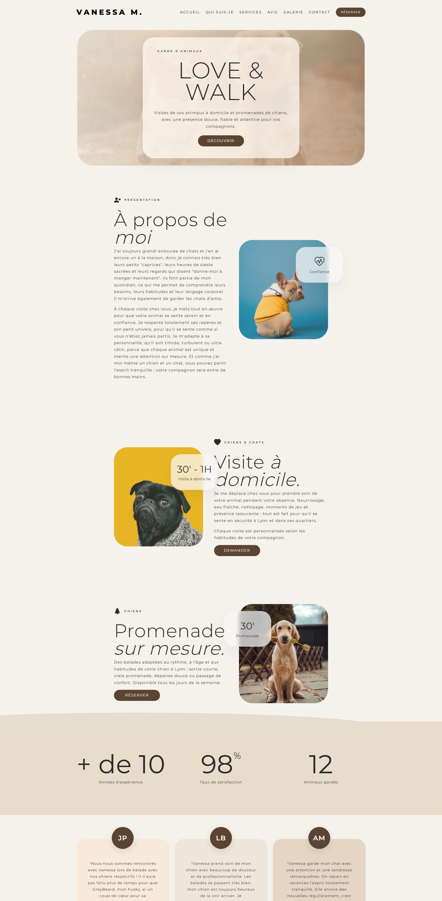
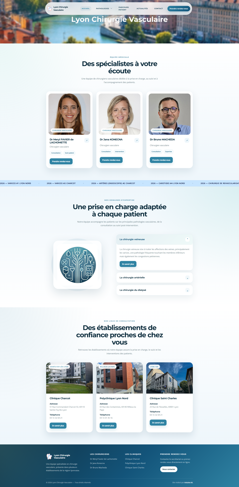
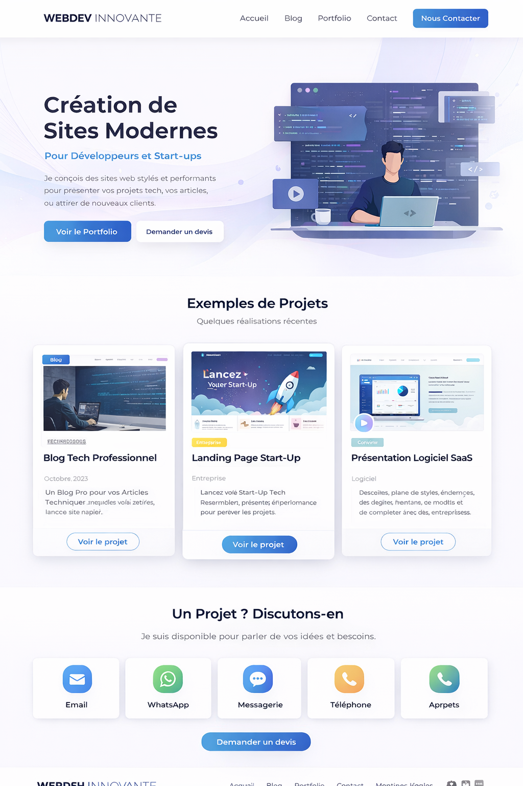
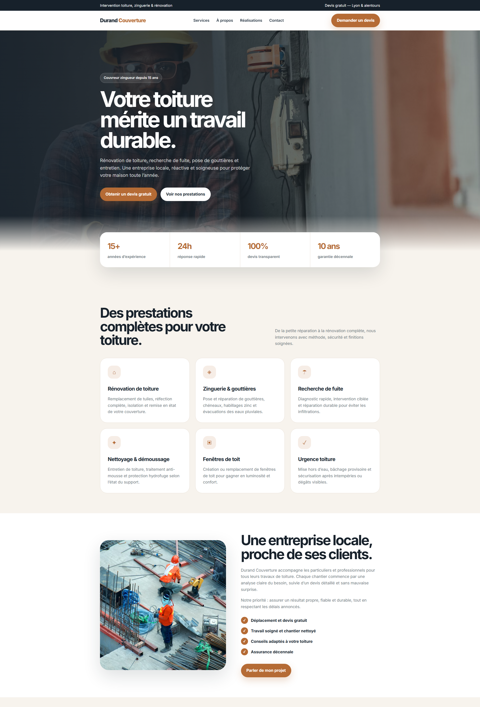

Développeur web freelance à Lyon
Des sites web clairs, modernes et efficaces
Je crée et modernise des sites internet pour les indépendants, professions libérales et petites entreprises. Chaque projet est pensé pour inspirer confiance, être agréable sur mobile et faciliter les demandes de contact.

Lyon · Projets partout en France
Réponse sous 24 hUn premier retour rapide et sans engagement.
100 % responsiveUn affichage soigné sur mobile, tablette et ordinateur.
Site évolutifDes fonctionnalités peuvent être ajoutées ensuite.
À propos
Un accompagnement simple, humain et professionnel
Je vous accompagne de A à Z dans la création ou la refonte de votre site : structure, design, contenus, intégrations et mise en ligne. Mon objectif est de vous livrer un site clair et crédible qui représente réellement votre activité.
Basé à Lyon, je travaille avec des professionnels locaux ainsi qu’avec des clients partout en France. Vous échangez directement avec la personne qui conçoit et développe votre projet.
Conseils adaptés à votre activité
Design personnalisé et cohérent
Optimisation mobile et performance
Accompagnement après la mise en ligne
Services
Ce que je peux faire pour vous
Des prestations adaptées aux besoins des indépendants, artisans, professions libérales et petites entreprises.
Création de site vitrine
Un site professionnel pour présenter votre activité, rassurer vos visiteurs et générer des demandes.
- Design moderne
- Structure claire
- Formulaire de contact
- Mise en ligne incluse
Refonte de site internet
Modernisation du design, amélioration de la lisibilité et simplification du parcours utilisateur.
- Nouvelle identité visuelle
- Meilleure expérience mobile
- Corrections techniques
- Structure optimisée
Mobile et performances
Correction des lenteurs et des problèmes d’affichage pour proposer une navigation fluide.
- Approche mobile-first
- Images optimisées
- Temps de chargement réduit
- Core Web Vitals
Intégrations utiles
Ajout d’outils destinés à faciliter vos échanges avec les visiteurs et votre gestion quotidienne.
- Calendly ou prise de rendez-vous
- Avis clients et cartes
- Analytics et Search Console
- Liens de paiement
Maintenance
Interventions ponctuelles ou suivi régulier pour conserver un site fonctionnel et à jour.
- Sauvegardes
- Support technique
- Petites modifications
- Évolutions à la demande
SEO local
Optimisation de votre site et de sa structure afin d’améliorer sa compréhension par Google.
- Balises SEO
- Contenus locaux
- Maillage interne
- Google Business Profile
Réalisations
Quelques projets récents
Des sites et maquettes réalisés pour des activités variées.


Maquette commerce
Proposition graphique moderne destinée à valoriser une activité commerciale.

Maquette couvreur
Concept de site local orienté prise de contact et présentation des prestations.
Tarifs
Combien coûte un site web professionnel ?
Chaque projet est différent. Je vous propose une estimation claire après un premier échange gratuit.
Présenter votre activité
Site vitrine
Sur devis
Une présence en ligne professionnelle et adaptée au mobile.
- Design personnalisé
- Pages essentielles
- Formulaire de contact
- Mise en ligne
Moderniser l’existant
Refonte de site
Sur devis
Une nouvelle version plus claire, moderne et performante.
- Audit de l’existant
- Nouveau design
- Optimisation mobile
- Corrections SEO
Besoin spécifique
Projet sur mesure
Devis personnalisé
Pour une solution nécessitant des fonctionnalités particulières.
- Outils externes
- Prise de rendez-vous
- Fonctionnalités spécifiques
- Accompagnement complet
Un fonctionnement simple
1Vous m’expliquez votre besoin
2Je vous conseille et prépare une estimation
3Vous recevez un devis clair
Questions fréquentes
Tout savoir avant de lancer votre projet
Le délai dépend de la taille du site, des contenus et des fonctionnalités. Un site vitrine simple peut généralement être réalisé en quelques semaines lorsque tous les éléments sont disponibles.
Oui. Chaque site est conçu et vérifié pour les smartphones, tablettes et ordinateurs, avec une navigation, des images et des formulaires adaptés à chaque écran.
Une base SEO technique est intégrée : structure des titres, balises principales, vitesse, accessibilité et contenus compréhensibles. Une stratégie plus complète peut être ajoutée selon vos objectifs.
Oui. Le site peut évoluer avec de nouvelles pages, des fonctionnalités ou des mises à jour. Une maintenance optionnelle ou des interventions ponctuelles peuvent être prévues.
Non. Je suis basé à Lyon mais je travaille également à distance avec des clients situés partout en France.
Contact
Parlons de votre projet
Décrivez-moi votre besoin. Je vous répondrai avec un premier avis et les prochaines étapes possibles.